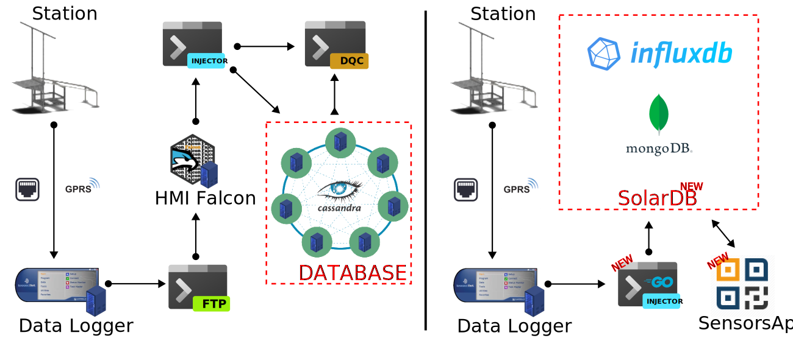

Introduction to the IOS-net open data tools
mathieu.delsaut@univ-reunion.fr
IOS-net closing seminar
19th September 2022
Introduction

Functional Schema
2019 vs 2022
2019
2022
A database migration
A database migration

A database migration
News features
- Usage of time series database (DB) : InfluxDB,
- New injector of data in golang : the treatment chain is quicker,
- New metadata DB using MongoDB : SensorDB,
- New app to help maintainer record metadata : SensorsApp.
A database migration
News features
- Usage of time series database (DB) : InfluxDB,
- New injector of data in golang : the treatment chain is quicker,
- New metadata DB using MongoDB : SensorDB,
- New app to help maintainer record metadata : SensorsApp.
Breakings changes
- Need to update all tools using the DB,
- No more quality control store on the DB (but release Python library pybsrnqc),
- Name of stations and sensors changed for better clarity.
A database migration
News features
- Usage of time series database (DB) : InfluxDB,
- New injector of data in golang : the treatment chain is quicker,
- New metadata DB using MongoDB : SensorDB,
- New app to help maintainer record metadata : SensorsApp.
Breakings changes
- Need to update all tools using the DB,
- No more quality control store on the DB (but release Python library pybsrnqc),
- Name of stations and sensors changed for better clarity.
The database is now called SolarDB
IOS-net project website : Galilee
IOS-net project website : Galilee
News features
- English, finally !
- Two new kinds of services : API & languages libraries,
- New news and the all episodes of IOS-net documentary.
News features
- English, finally !
- Two new kinds of services : API & languages libraries,
- New news and the all episodes of IOS-net documentary.
IOS-net project website : Galilee
News features
- English, finally !
- Two new kinds of services : API & languages libraries,
- New news and the all episodes of IOS-net documentary.
Link
https://galilee.univ-reunion.fr/
News features
- English, finally !
- Two new kinds of services : API & languages libraries,
- New news and the all episodes of IOS-net documentary.
Link
https://galilee.univ-reunion.fr/
SolarDB API
SolarDB API

SolarDB API
News features
- Full access to data and metadata,
- Everybody can use it but with registration,
- Support of CSV and JSON formats,
- Full documentation,
- Capacity to request aggregations.
SolarDB API
News features
- Full access to data and metadata,
- Everybody can use it but with registration,
- Support of CSV and JSON formats,
- Full documentation,
- Capacity to request aggregations.
Breakings changes
- Address of API change,
- Necessity to rewrite all services using old API.
SolarDB API
News features
- Full access to data and metadata,
- Everybody can use it but with registration,
- Support of CSV and JSON formats,
- Full documentation,
- Capacity to request aggregations.
Breakings changes
- Address of API change,
- Necessity to rewrite all services using old API.
Link
https://solardb.univ-reunion.fr
Example of using API with Curl
curl -c cookie.txt https://solardb.univ-reunion.fr/api/v1/login?token=YOURTOKENHERE
curl -s -b cookie.txt https://solardb.univ-reunion.fr/api/v1/data/json?site=antananarivo | jq ".data"
curl -s -b cookie.txt https://solardb.univ-reunion.fr/api/v1/data/csv/antananarivo > antananarivo.csv
head antananarivo.csv
Client Libraries

Example with python :
# pip install pysolardb
from pysolardb.SolarDB import SolarDB
from datetime import datetime as dt
import matplotlib.pyplot as plt
s = SolarDB(token="PUTYOURTOKENHERE")
data = s.getData(sites=["amitie"], sensor_types=["GHI"], start="-3d", aggrFn="mean", aggrEvery="10m")
plt.figure()
dates = [dt.strptime(date, "%Y-%m-%dT%H:%M:%SZ") for date in data["amitie"]["GHI_qp01_Avg"]["dates"]]
values = data["amitie"]["GHI_qp01_Avg"]["values"]
plt.plot(dates, values)
plt.title(label = "GHI")
plt.show()
Example with R :
devtools::install_github("LE2P/rSolarDB")
library(rSolarDB)
login(token="PUTYOURTOKENHERE")
d <- getXtsData(sites = "hahaya", start = "-7d", type = "GHI,DHI")
plot(d$hahaya$GHI_qs01_Avg, type = "l")
lines(d$hahaya$DHI_qs01_Avg, col = '2', type = "l")
SolarIO
SolarIO
News features
- Default data retrieval is hourly aggregation,
- Possibility to switch between 1h, 10mins and 1min,
- Aggregation : mean, max, min.
SolarIO
News features
- Default data retrieval is hourly aggregation,
- Possibility to switch between 1h, 10mins and 1min,
- Aggregation : mean, max, min.
Links
THREDDS Data Server (TDS)
FAIR data server using NetCDF and CSV
THREDDS Data Server (TDS)
FAIR data server using NetCDF and CSV
News features
- Presence of all stations managed by EnergyLab,
- Enhance the CF-Conventions version 1.08
THREDDS Data Server (TDS)
FAIR data server using NetCDF and CSV
News features
- Presence of all stations managed by EnergyLab,
- Enhance the CF-Conventions version 1.08
Breakings changes
- Monthly files,
- Sensors and stations naming conventions changed.
THREDDS Data Server (TDS)
FAIR data server using NetCDF and CSV
News features
- Presence of all stations managed by EnergyLab,
- Enhance the CF-Conventions version 1.08
Breakings changes
- Monthly files,
- Sensors and stations naming conventions changed.
Link
https://galilee.univ-reunion.fr/thredds/catalog.html
Zenodo
| name | territory | altitude | latitude | longitude | doi | minDate | maxDate |
|---|---|---|---|---|---|---|---|
| Amitie | Seychelles | 3.00 | -4.32 | 55.69 | 10.5281/zenodo.4408667 | 2019-11-20 10:59:00 | 2022-09-17 07:18:00 |
| Anse Boileau | Seychelles | 2.00 | -4.71 | 55.48 | 10.5281/zenodo.4408665 | 2019-11-18 13:25:00 | 2022-09-17 07:18:00 |
| Antananarivo | Madagascar | 1309.00 | -18.90 | 47.55 | 10.5281/zenodo.4408673 | 2019-11-19 11:56:00 | 2022-09-17 07:15:00 |
| Caverne Dufour | La Réunion | 2495.00 | -21.11 | 55.50 | 10.5281/zenodo.5812546 | 2021-06-16 11:13:00 | 2022-09-17 07:17:00 |
| Antsiranana | Madagascar | 108.00 | -12.35 | 49.29 | 10.5281/zenodo.4408675 | 2019-11-21 11:37:00 | 2022-09-17 07:17:00 |
| Hahaya | Comores | 32.00 | -11.54 | 43.28 | 10.5281/zenodo.4408671 | 2019-12-05 11:12:00 | 2022-09-17 07:14:00 |
| Radio Telescope Bras D'Eau | Mauritius | 27.00 | -20.14 | 57.73 | 10.5281/zenodo.4408660 | 2015-11-24 10:07:00 | 2022-09-17 07:16:00 |
| Ouani | Comores | 20.00 | -12.13 | 44.43 | 10.5281/zenodo.4408669 | 2019-12-06 12:27:00 | 2022-09-17 07:17:00 |
| Plaine des Palmistes Parc National | La Réunion | 1057.00 | -21.14 | 55.62 | 10.5281/zenodo.4408677 | 2018-12-12 11:45:00 | 2022-09-17 07:16:00 |
| Reserve Francois Leguat | Mauritius | 36.00 | -19.76 | 63.37 | 10.5281/zenodo.4001619 | 2017-05-09 11:00:00 | 2022-09-03 10:45:00 |
| Vacoas | Mauritius | 431.00 | -20.30 | 57.50 | 10.5281/zenodo.4408662 | 2019-10-29 13:47:00 | 2022-09-17 07:15:00 |
Conclusion
Conclusion
Findable
- DOI : the data obtains an unique globally ID and forever persistent.
- OPeNDAP : the metadata is recorded in a searchable way (readable and searchable).
Conclusion
Accessible
- OPeNDAP : the data can be retrieved thanks to their identifier using a standardized communication protocol. OPeNDAP is open, free and universally implementable.
Conclusion
Interoperable
- CF Conventions : the data uses a formal, accessible, shared and widely applicable model for the representation of knowledge (standards on variables, units, and general metadata).
Conclusion
Reusable
- Creative Common : each dataset is published under a clear and accessible user license.
- CF Conventions : the data is associated with its origin and respects the standards of the community applicable to the field.
Thanks.
(Optional) Training workshop
Access & manipulation of the IOS-net data using Python and R
Installation
R
The package stays on the laboratory Github : https://github.com/LE2P/rSolarDB.
To install it, simply type in the R Console :
install.packages("remotes")
remotes::install_github("LE2P/rSolarDB")
Python
You could find the library on pypi : https://pypi.org/project/pysolardb/.
After installing pip, install the library
pip install pysolardb
Load library and registration
We saw that in SolarDB database, you need a token to query data.
The token will be send on your email, and you will must open the link of validation.
R
Use the function register to obtains a token
library(rSolarDB)
register(email = "mathieu.delsaut@univ-reunion.fr")
Python
Here, pysolardb use class. We create an object solar and call the method register.
from pysolardb.SolarDB import SolarDB
solar=SolarDB()
solar.register(email="mathieu.delsaut@univ-reunion.fr")
Now, please visit your mailbox, validate and copy your token.
Login, Status and Logout
R
library(rSolarDB)
login(token = "PUT_YOUR_TOKEN_HERE")
status()
logout()
Python
from pysolardb.SolarDB import SolarDB
solar = SolarDB()
solar.login(token="PUT_YOUR_TOKEN_HERE")
#OR directly by creating object
solar = SolarDB(token="PUT_YOUR_TOKEN_HERE")
solar.status()
solar.logout()
Don't forget to sign-in again after testing the logout !
Obtains some important list : sites, types & sensors
R
sites() # List of site aliases
types() # List of type of data : GHI, DHI, TA ...
sensors(sites = "amitie") # List of sensors present on amitie
If you use RStudio, press F1 with the cursor on function to obtains documentation.
help(sites) # Works also
Python
solar.getAllSites()
solar.getAllTypes()
solar.getSensors(sites=["amitie"], sensor_types=["DHI","GHI"])
print(solar.getSensors.__doc__) # if you want to see method documentation
Those list are part of the data model and some parameters are needed to query data and metadata.
Query Metadata : Campaigns
Campaigns are metadata about each station.
It contains information like the alias of site, the position of the station or for example the DOI
R
meta <- campaigns()
meta
meta$alias
campaigns(territory = "Mauritius")
Python
solar.getCampaigns()
solar.getCampaigns(territory="Mauritius")
Query Metadata : Models
Models are metadata about different models of sensors.
It contains information like the commercial name or the constructor. Example : SPN1, WXT536, ...
R
models()
models(type = "Meteorological")
Python
solar.getModels()
solar.getModels(model_type="Meteorological")
Remarks that there is more models than in your station.
The reason is because the database contains also data from La Réunion or Durban.
Query Metadata : Instruments
Instruments are metadata about precise instrument for a certain model.
It contains information like the serial number or a unique ID we call label.
Example of label : aa, pb, ct.
R
instruments()
Python
solar.getInstruments()
The label will be in the measure name to identify exactly from witch instruments it come.
Query Metadata : Measures
Measures are metadata about each series of data.
It contains information like the CF-Conventions standard name, the aggregation function or the units.
R
measures()
measures(type = "DHI")
measures(type = "DHI", nested = TRUE)
Python
solar.getMeasures()
solar.getMeasures(measure_type="UVAB")
solar.getMeasures(measure_type="UVAB", nested=True)
nested is a special parameter to merger results from Measures, Instruments and Models.
Query Data
The minimum information to query data is the site alias.
By default, the return data are the last 24 hours.
R
d <- getData(sites = "amitie,hahaya", type = "GHI")
head(d$amitie$GHI_qp01_Avg$dates)
head(d$amitie$GHI_qp01_Avg$values)
plot(d$amitie$GHI_qp01_Avg$values, type='l')
lines(d$hahaya$GHI_qs01_Avg$values, type='l', col=2)
Python
data = solar.getData(sites=["amitie", "hahaya"], sensor_types=["GHI"])
plt.figure()
plt.plot(data["amitie"]["GHI_qp01_Avg"]["values"])
plt.plot(data["hahaya"]["GHI_qs01_Avg"]["values"])
plt.title(label = "GHI")
plt.show()
Query data between two dates
By default, stop is now().
R
# By influxdb duration
d <- getData(sites = "diego", type = "GHI,DHI", start = "-7d")
# By date
d <- getData(sites = "diego", type = "GHI,DHI", start = "2021-01-01", stop = "2021-02-31")
Python
data = solar.getData(sites=["diego"], sensor_types=["GHI", "DHI"], start="-2y", aggrFn="mean", aggrEvery="1w")
data = solar.getData(sites=["diego"], sensor_types=["GHI", "DHI"], start="2021-01-01", stop="2021-01-02")
Note that start include, stop exclude, i.e. t := [start, stop[
That's it !
More suggestions ? Wan't to collaborate ? Find a bug ?
https://github.com/LE2P/rSolarDB/issues
https://github.com/LE2P/pysolardb/issues